How to use this lesson
§0 · From last time. Capability + applications produce societal effects. Worth a lesson because they affect your design choices today.
Business Scenario
Daniel: "If every bank deploys a Sherpa, what happens?"
Bridge to Topic
Three societal threads: agent-to-agent economic activity, large-scale safety, regulatory governance.
Mind Map

Mermaid source
mindmap
root((Societal))
Agent economies
Agents negotiate
Agent markets
Trust + reputation
Safety
Scaled risk
Misuse
Concentration
Governance
EU AI Act
NIST RMF
Sector-specific
Elaboration
4.1 Agent economies
Once agents are widespread, they will negotiate with each other (your refund agent talks to your supplier's claims agent). Requires identity, reputation, trust protocols. A2A standards bootstrap this.
Risk: agents can negotiate against their principals' interest (the supplier's agent finds an exploit your agent agrees to).
4.2 Safety at scale
When 1M agents act simultaneously, small per-agent risks become large aggregate risks. Examples: 1M agents all caching wrong information; 1M agents all triggering DDoS-like patterns on shared infrastructure.
Mitigations: rate limits aggregated across agents; coordination via shared signals (Module 6 + governance).
4.3 Governance
EU AI Act, NIST AI RMF, sector-specific (SR 11-7 for banking, FDA for medical) all apply. Map your deployment to applicable frameworks; build for the strictest.
For Sherpa: SR 11-7 + EU AI Act + GDPR. Each adds requirements; sum = the discipline this course has tried to teach.
Problem Statement
For your domain: which governance frameworks apply? What's the gap between current Sherpa-class design and full compliance?
Solution Walkthrough
Module 10's audit + observability covers most requirements. Specific frameworks may add more (e.g., explainability requirements in EU AI Act). Build in, don't bolt on.
Mathematical Foundation
No additional math.
Technical Deep-Dive
8.1 The "build for the strictest" rule
Among the regimes you operate in, pick the strictest. Build to it. Easier than building to each separately; over-compliance is rarely a problem.
8.2 The agent-as-fiduciary question
Agents act on behalf of principals. Legal frameworks for fiduciary duties (financial advisors, lawyers) are being extended. Watch this space.
8.3 Agent-to-agent economic activity: concrete scenarios
What "agents negotiating with agents" looks like in practice:
Scenario A: B2B supplier negotiation
- Your procurement agent talks to supplier's pricing agent.
- Both follow protocol-defined etiquette (request quote, counter, accept/decline).
- Each is bounded by hard limits set by humans (max price, min quantity).
- Audit log records every offer and acceptance.
Risk: supplier's agent finds an exploit (e.g., subtle ambiguity in your max-price logic). Your principal — you — is bound by what the agent agreed.
Mitigation: hard limits in code, not prompt. Human approval for any commitment above threshold. Standard contracts with explicit "no agent autonomy beyond X."
Scenario B: Customer-agent ↔ vendor-agent
- Customer's personal agent negotiates a refund with vendor's support agent.
- Both have policies they enforce.
- Outcome: customer gets resolution in seconds; vendor saves support cost.
Risk: race to the bottom — increasingly aggressive customer agents, increasingly defensive vendor agents. Both sides escalate.
Mitigation: industry standards for agent behaviour; arbitration protocols.
Scenario C: Multi-party coordination
- Three agents (buyer, seller, escrow) coordinate a transaction.
- Trustless protocols (smart-contract-like) enforce the rules.
Risk: protocol bugs become exploit vectors at scale.
Mitigation: formal verification of coordination protocols; bounded blast radius.
These scenarios are all 2-5 years out for non-trivial use cases. Worth tracking; not worth planning for in 12-month roadmaps.
8.4 Concentration risk: when 3 model providers run 90% of agents
If 3 providers (Anthropic, OpenAI, Google) run >90% of production agent inference, what risks does that create?
- Coordinated outage: provider hiccup affects most of the economy simultaneously.
- Coordinated capability shift: provider deprecates a model; thousands of agents need rework.
- Coordinated pricing: oligopoly pricing dynamics.
- Coordinated value alignment: providers' choices about what models will/won't do propagates to all downstream applications.
Mitigations at org level:
- Multi-provider routing (Lesson 9.4).
- Local model fallback for critical paths.
- Industry-collective bargaining for pricing/SLAs.
Mitigations at policy level: open-source model support; alternative providers; regulatory caps on concentration.
This is a real long-term consideration for the industry, not just any one org.
8.5 The misuse landscape (what to watch for)
Agent capability enables new misuse:
| Misuse | Scale change |
|---|---|
| Phishing | Personalised at scale; harder to detect |
| Disinformation | Generated at scale; campaign coordination |
| Targeted harassment | Persistent and tireless |
| Fraud (financial, romance) | Patient, personalised, multi-channel |
| Vulnerability research / exploitation | Lower attacker skill threshold |
Defensive responses (some already deployed):
- Content provenance (C2PA, watermarking)
- Multi-factor verification for high-stakes transactions
- Behavioural analysis (rate limits, pattern detection)
- Regulatory frameworks for AI-generated content
If you're building defensive systems: this is your roadmap. If you're building offensive capabilities: please don't, and read Module 10 again.
8.6 The governance landscape (what to comply with)
Active frameworks as of 2026:
- EU AI Act (in force): risk-based tiering; high-risk systems need conformity assessment, technical documentation, human oversight.
- NIST AI Risk Management Framework (US, voluntary but quasi-standard): risk-management lifecycle for AI systems.
- SR 11-7 (US banking): model risk management; applies to agents in regulated banking.
- UK AI Regulation (sector-specific): defers to existing regulators; agents fall under banking/insurance/healthcare oversight.
- Singapore AI Verify (voluntary): testing framework; basis for certifications.
- China interim measures (in force): registration, content review, generative AI specifics.
Build to the strictest applicable. The discipline (Modules 8-10) covers most requirements.
8.7 Industry-specific obligations
| Industry | Top obligations | Where to invest |
|---|---|---|
| Banking | SR 11-7 model validation; CFPB consumer protection | Audit trail; explainability; calibration eval |
| Insurance | NAIC model regulation; state-specific rules | Eval per state; documentation per use case |
| Healthcare | FDA SaMD; HIPAA | Clinical validation; PHI controls |
| Legal | State bar opinions; client confidentiality | Audit; privilege separation |
| HR | EEOC; AI bias regulations | Bias audits; impact assessments |
| Education | FERPA; state-level rules | Privacy; consent |
Map your deployment to the union. Don't retrofit.
8.8 The professional-ethics layer
Beyond regulation: professional norms emerging for agent builders.
- Honesty about capability: don't overstate what your agent can do. Underestimate in product copy; let users be pleasantly surprised.
- Honesty about limitations: explicitly document what the agent can't do; surface uncertainty to users.
- Affordance for override: every consequential decision should be human-overridable.
- Reversibility-first design: prefer reversible actions; require explicit consent for irreversible ones.
- Accountability: when something goes wrong, the org owns it. Not "the AI did it."
These norms aren't enforced by law (yet). But they're the difference between an industry that earns trust and one that erodes it.
8.9 The closing thought
The "future" of agents will look a lot like the present — capability changes will compound, but the discipline of building good agents (Modules 1-10) will remain the bottleneck.
The teams that win in 2027 are the ones building robust foundations in 2026 — eval gates, observability, safety patterns, audit trails. The capability layer takes care of itself; the model labs are competing fiercely. The discipline layer is yours alone.
Build the boring, durable stuff. The future will reward you.
What This Unlocks
- The capstones: apply everything learned to a real(ish) project.